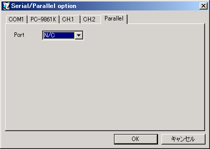
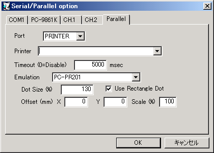

接続デバイスを選択します。
この設定ではホストのパラレルポート(LPT1〜LPT4)に直接接続します。
COM1と同様に通信ポートを設定します。

この設定ではホストOSのプリンタドライバへ印刷データを送信します。
使用するプリンタを指定します。
通信がない状態がここに指定した時間だけ継続したとき、印刷ジョブが完了したとみなします。
ここに0を指定した場合は、リセットするあるいは終了させるなどで明示的に印刷ジョブ完了させるまで1つのジョブとして扱われます。 明示的な印刷ジョブ完了はDeviceメニューのFinish Current Print Jobでも行えます。
通常のプリンタ(GDI印刷対応)で、指定した方式での印刷ができるようにエミュレーションします。
| 項目 | 説明 |
|---|---|
| Bypass (RAW) | データをそのままプリンタへ送信します（エミュレーション無効） |
| PC-PR201 | PC-PR201系プリンタでの印刷を再現します。 |
| ESC/P | ESC/P系プリンタでの印刷を再現します。 |
グラフィック印刷時のドットのサイズを補正します。例えば130にすると130%の大きさに補正されます。
グラフィック印刷時のドットを円ではなく長方形として描画します。また、横方向に連続するドット列を1つの矩形へ統合してデータ量及び処理負荷を低減します。
印字のX,Y座標位置を調整します。
印字のスケールを調整します。